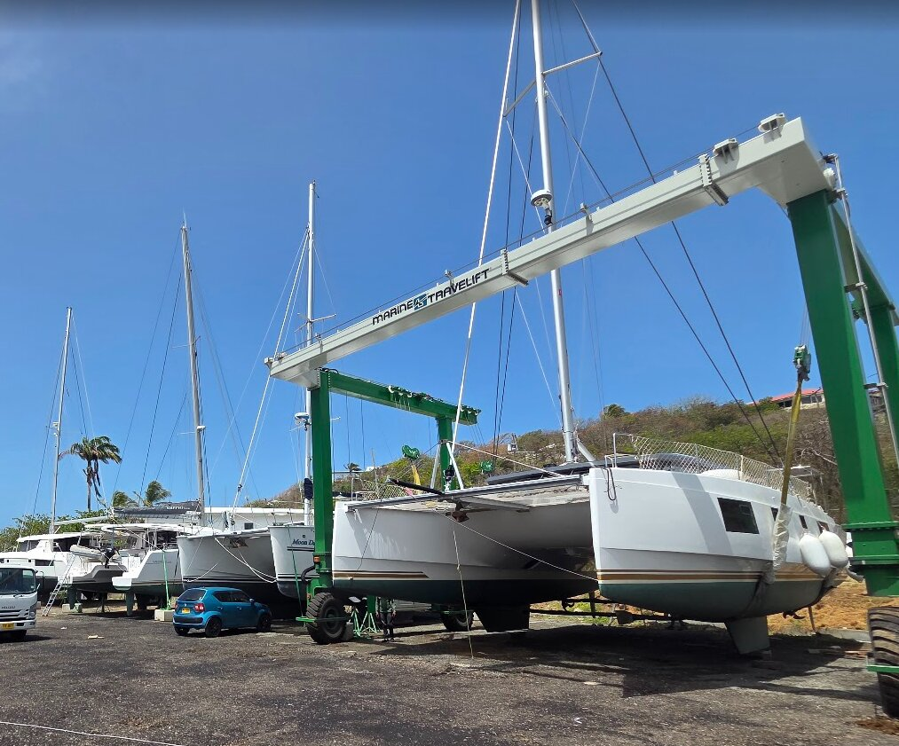

Upgrades & Repair History
Below is a list of upgrades and repairs done to Courage. It's not exhaustive and doesn't touch the small items added along the way (fishing pole holders, interior outfitting, soft shackles) or the smaller repairs (fixing poorly installed door handles throughout the boat with Loctite, for example). Relative to stories from other owners — Nautitech and other brands — our teething pains and warranty repairs have been minor and insignificant in the big picture. We know several owners personally who've had far bigger issues with their new boats: windows falling out, mini-keels falling off, engine install issues, improperly rigged reef lines.
The following is meant to illustrate (1) how diligent we've been as owners in identifying and fixing any known issues, and (2) the extensive upgrades we've made as we grew into the lifestyle. Another great source of documentation for this history is the FB Nautitech Catamarans Owners Group, where I've often posted upgrades and repairs in detail to share with the community or seek feedback.

Courage hauled out at Hartman Cove, June 2026.
Jun / Jul 2023
- Schenker SMART 60 watermaker ($11,000)
- Highfield 340 tender & 20hp Honda ($8,000)
- ACUVA UV drinking-water filtration system ($500)
- Kids' safety netting ($250)
- Various upgraded USB outlets added — nav station, mast, master bath, etc. ($250)
- Warranty work completed by Key Yachting
- Piezoelectric ignitor for oven repaired
- Various wood trim sections repaired
Dec 2023 – Feb 2024
- Stainless steel cockpit hand rail on coach roof, cockpit towel racks (2x), and solar arch rack ($1,000)
- Side and rear sunshades to extend cockpit area ($750)
- 3 oversized bean bags for lounging around the boat ($450)
- Lightweight foredeck sunshade ($300)
- Added new jackline points ($200)
- Added winchard points on rails to better trim the jib & allow wing-on-wing ($250)
- SailServer boat tracking system ($200)
- Full dinghy cover ($150)
- Added cockpit drain splash cover ($150)
- Added Blink security cameras ($150)
- Shore water supply input added — bypasses tanks & freshwater pump ($250)
- Saloon door mosquito net & custom window mosquito nets ($250)
- Mesh window screens installed on all cabins ($200)
- 10 hatch covers (white) & winch covers ($250)
- Dusk-to-dawn anchor light, tricolor, SOS combo light installed ($150)
- Weber Q BBQ ($500)
Apr 2024
- 550W solar added above helm stations ($3,000)
- New 6.5m anchor bridle ($300)
- Shelly relays for water heater automation ($100)
- Warranty work completed by Malta Yachting
- Starboard throttle leak repaired, sealed, and tested
- Water pressure in forward cabin fixed — kinked plumbing
- Cockpit fridge gap/stretching repaired and resealed
- Surface gelcoat bubbles repaired
- Gelcoat stains cleaned/repaired
- YKK poppers replaced with spares provided
- Port/starboard rear window leaks repaired & tested
- Port/starboard turning blocks reinforced with backing plates
- Anchor chain plastic repaired
- Floorboards repaired
Dec 2024 – Mar 2025
- Bosch 2-burner induction & 2-burner gas cooktop ($1,000)
- 7K BTU DC Dormaire air conditioner installed in master cabin ($4,500)
- 8K BTU AC Dormaire air conditioner installed in saloon ($3,500)
- 2 × 3.5K BTU AC Dormaire air conditioners installed in starboard cabins ($4,500)
- 2 × SeaBlaze Quattro full-spectrum color underwater lights ($800)
- Sanimarine 31 SFA (Comfort) electric flush toilet, starboard forward en-suite ($1,500)
- 24″ Amazon Fire TV added in saloon ($150)
- Upgraded dinghy davits to 3-to-1 purchase ($100)
- 9 × Ruuvitag wireless temp/humidity sensors ($500)
- Saltwater washdown pump installed ($250)
- Warranty work completed
- Bubbles on hull seam sanded & repaired, new Coppercoat applied
- Vitrifrigo fridge (104L) / freezer (78L) replaced
- Grey wrap applied to coach roof
- Replaced rear starboard Lewmar window hatch
May 2025
- Schenker Smart 60 watermaker rebuilt and serviced under warranty by the Schenker factory in Naples, Italy
August 2025
- Victron 100/50 MPPT & 800W Renogy flexible solar blankets ($1,200)
- Saloon full-spectrum LED lighting with Shelly DC relay ($250)
- Upgraded mainsheet & 3-block traveler system ($1,500)
- Upgraded L&S autopilot with ECOPILOT ($250)
November 2025
- Main halyard, 1st & 2nd reef chafe protection sleeves ($300)
- Custom, larger, grey sunshade for foredeck ($1,400)
- Starboard blackwater tank sensor ($100)
- Vechline 1700W portable generator ($500)
- 40L portable fridge/freezer ($500)
- Repaired leaking propane locker drain ($100)
- New winch holder pockets ($50)
January 2026
- New 1000W Quick windlass motor installed ($600)
- Replaced 3-year-old Gen 2 Starlink with new Gen 3 ($300)
March 2026
- 118sqm gennaker repaired by North Sails Antigua loft ($1,200)
April 2026
- Warranty work performed by NeoMarine (Martinique)
- Improved solar arch mounting
- Replaced leaking caulking on aft cockpit saloon window